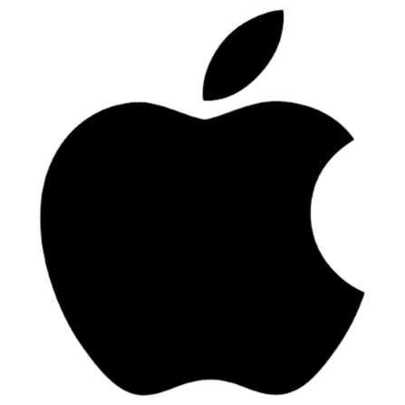
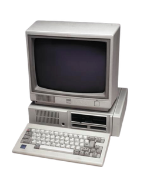
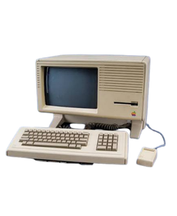

History of Macintosh Computer GUIsS05 Group 7
Aguirre, Ching, Cruz, Guarin, Papa
The Birth of the Macintosh | 1984 - 1990
The original Macintosh (1984) marked a major shift in personal computing by making graphical computing accessible to everyday users. Unlike earlier personal computers that emphasized technical capability, the Macintosh focused on usability through a graphical user interface (GUI), built-in display, mouse input, and an integrated all-in-one design.
At the time, the Mac's main rival for the home user market was the IBM PCjr, which had a 14-inch monitor.
It was not the first computer to use a mouse. It was not even the first computer from Apple to be or have any of these things. The Apple Lisa, released a year before, had them all.
The Macintosh revolutionized the personal computing industry and everything that was to follow because of its emphasis on providing a satisfying, simplified user experience.
Architecturally, the Macintosh used the Motorola 68000, a single-core 16/32-bit processor running effectively at 6 MHz. It included 128 KB of RAM, which was extremely limited even for its time. Apple originally designed the machine with memory support only for 128 KB, but engineers quietly added extra address lines that made later expansion to 512 KB possible through unofficial hardware modifications.
This period showed a broader architectural transition: computers were no longer improving only through faster processors—they were becoming easier to interact with.
At the time, the Mac's main rival for the home user market was the IBM PCjr, which had a 14-inch monitor.

The IBM PCjr
It was not the first computer to use a mouse. It was not even the first computer from Apple to be or have any of these things. The Apple Lisa, released a year before, had them all.

The Apple Lisa
The Macintosh revolutionized the personal computing industry and everything that was to follow because of its emphasis on providing a satisfying, simplified user experience.
Architecturally, the Macintosh used the Motorola 68000, a single-core 16/32-bit processor running effectively at 6 MHz. It included 128 KB of RAM, which was extremely limited even for its time. Apple originally designed the machine with memory support only for 128 KB, but engineers quietly added extra address lines that made later expansion to 512 KB possible through unofficial hardware modifications.
This period showed a broader architectural transition: computers were no longer improving only through faster processors—they were becoming easier to interact with.